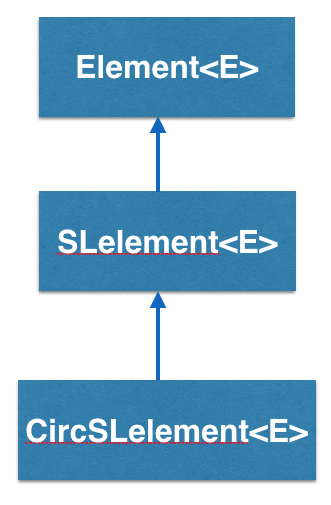
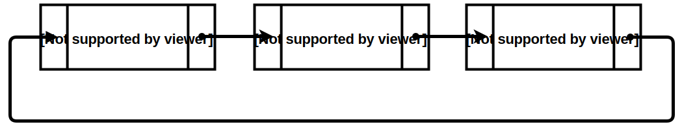

CircSLelement<E> implements a circular singly linked list element in BRIDGES and is inherited from SElement<E>

How does the CircSLelement<E> work?
CircSLelement<E> stands for Circular Singly Linked Element and is a type
of container that has one link, pointing to another SLelement<E>.
So an CircSLelement<E> "knows" who it is pointing at but it does not know
who is pointing at it(if any).

In the above example, CircSLelement1 points to CircSLelement2. Calling getNext()
on CircSLelement1 will return a link to CircSLelement2, and calling getNext() on
CircSLelement2 will return a link to SLelement3. CircSLelement3 points to CircSLelement1. Calling getNext() on CircSLelement3 will return a link to CircSLelement1.
Also notice that there is no getPrev(). CircSLelement2 has no idea what
element came before it. So, you CANNOT go backwards.
See also
This tutorial gives an introduction to the usage of cicular singly linked list. You can find the complete documentation of the features in the Doxygen documentation of the following classes and functions:
- CircSLelement [Java] [C++] [Python]
- Element [Java] [C++] [Python]
- ElementVisualizer [Java] [C++] [Python]
- LinkVisualizer [Java] [C++] [Python]
- Color [Java] [C++] [Python]
CircSLelement - An Example BRIDGES program
Example Details
- In this example, we will build and visualize a circular singly linked list with student information data, specified through the StudentInfo class, which will be part of the CircSLelement object, through its generic variable (CircSLelement<StudentInfo>).
- The elements are linked, colored and the list is visualized.
- The main difference from the normal singly linked list is that the last element is linked to the first element; iterating through a circular linked list will need to compare the link (that is iterated upon) to the beginning link of the list, in order to prevent an infinite loop.
Here's the final code:
Bridges Visualization
- Once all your code is in order, run your file.
- Assuming all your code is correct and it compiles correctly, a link to the Bridges website will be generated on the console.
- Copy/paste this link into your favorite browser to view a visualization of the data structure you just created.
- It should look something like this:
Well done! You’ve just created your Bridges Circular Singly Linked List project!